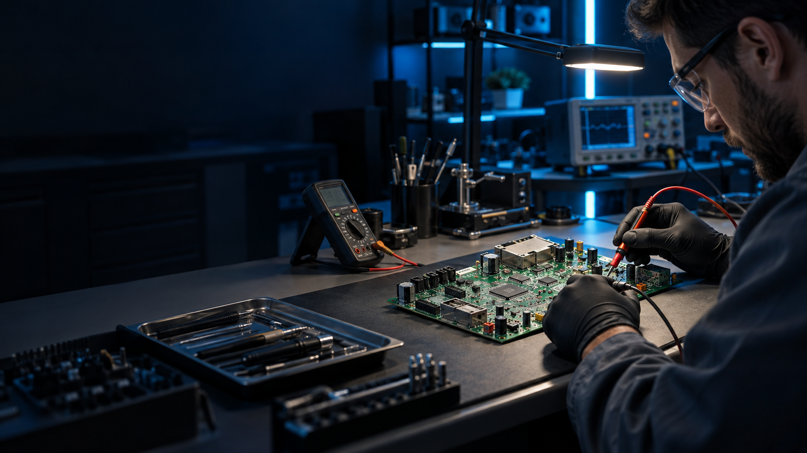

Maquinaria deportiva
Placas de cintas, bicicletas y equipos de gimnasio.
Consultar por WhatsApp
Electrónica de potencia · Madrid
Diagnosticamos y reparamos placas electrónicas de potencia para climatización, maquinaria deportiva y equipos profesionales.
Servicio especializado para profesionales, empresas de mantenimiento y particulares.
01 — Servicios
Nos centramos en localizar el origen de la avería para proponer una reparación viable y explicada con claridad.
Placas de cintas, bicicletas y equipos de gimnasio.
Consultar por WhatsAppPlacas de control y potencia de aire acondicionado.
Consultar por WhatsAppFuentes, convertidores y módulos profesionales.
Consultar por WhatsApp02 — Proceso
Trabajamos con un proceso claro para que puedas decidir con información técnica, no con suposiciones.
Indica el equipo, el fallo observado y, si la tienes, la referencia de la placa.
Revisamos el módulo y valoramos el origen y la viabilidad de la reparación.
Intervenimos la placa y comprobamos el funcionamiento con las pruebas disponibles.
Recibes una explicación del trabajo realizado y sus condiciones de garantía.
03 — Garantía
Cada reparación parte de una revisión técnica orientada a que el resultado sea fiable, trazable y útil para tu equipo.
Te indicamos con honestidad si la reparación tiene sentido.
Comprobamos el resultado antes de la entrega.
Sin tecnicismos innecesarios ni pasos ocultos.
Puedes enviarnos placas y módulos desde toda España.
04 — Contacto
Escríbenos por WhatsApp qué equipo es y qué está ocurriendo. Estudiaremos tu caso para indicarte el siguiente paso.
Pregunta por WhatsApp